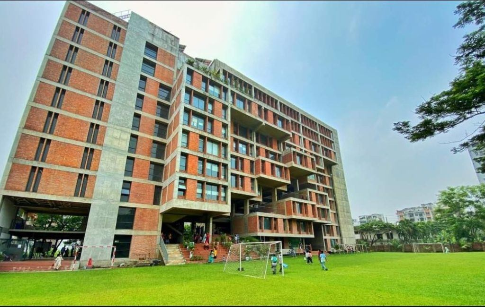

Begun as a kindergarten.
Playpen was founded in Dhaka by the educationist Mrs Zeba Khan. The school's own history describes it as starting with a kindergarten. By 1998 it had added primary classes, and later it took on the secondary years.
Today the school teaches Playgroup to Class XII, in four sections, on one campus. See how the four stages fit together. What the school sets out to do is in its mission statement, on the About page.
O Level first, then A Level.
The first candidate sat the Ordinary Level examination in 2003, and A Level classes followed in 2013. Since then a child who joins in Playgroup can stay at Playpen until the end of school. The Cambridge years are explained on The Cambridge pathway, and the senior subjects on AS and A Level.
Into a building of its own.
On 19 July 2018 the school moved into its own building in Bashundhara Residential Area, where it teaches today. Principal Mrs Sorabon Tohura led the move. Chairman Mr A. Mannan Khan oversaw the construction, and the architect was Mr Ehsan Khan.
The school had already begun to run its own buses in March 2014. Transport and safety says how a family applies for a place.
The second phase of the building is in progress.† Read about the campus, from the courtyards to the roof.

The people named in the record.
- Founder
- Mrs Zeba Khan, the educationist who founded the school.
- Chairman
- Mr A. Mannan Khan introduced A Level classes in 2013 and oversaw the construction of the building.
- Principal
- Mrs Sorabon Tohura led the move into the new building on 19 July 2018.
The school's early photographs and the names of its earlier principals will be added here when the school supplies them. Today's Chairman, Managing Director, Principal and Vice Principals are on Leadership.